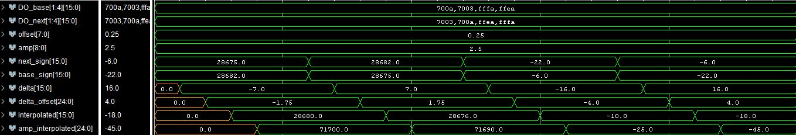

| Start date: | March 22 |
| End date: | April 4 |
| Lab: | 4 |
| Status | Complete
|
Lab 4 - Function generation
The goal of this lab is to generate an audio waveform with a high degree
of accuracy in both its period and frequency.
Lab Overview
You are to use Direct Digital Synthesis to reproduce your audio waveform. For required functionality your system should create a sinusoid.
For B-Level functionality, you must create a different waveform on the other channel.
You may choose any waveform so long as its not
Piecewise Linear.
A few interesting examples would be the sinc function, exponentially damped
sinusoids, or a waveform from a musical instrument (guitar, piano, or clarinet). It is
your responsibility to get the samples for this waveform. I would suggest
either deriving the waveform using a program like Python, Java, Matlab, or using a spreadsheet.
Here is an example spreadsheet to create the BRAM initialization text for a 1024 entry LUT
SineWaveLUT_1024.xlsx which you would need to modify for your size LUT.
Consult the handout associated with
lesson 27 for more details
on how to accomplish this.
Requirements
While you have the flexibility to design the waveform generator as you see
fit, your system must meet the following requirements:
- Use an update rate of 48kHz
- Your function generator should be able to create a maximum frequency of 12000 Hz.
- Your function generator should be able to create a minimum frequency between a 0.5 Hz and 1.0 Hz (this is also the minimum change in frequency).
- When your phase increment X = 1.0, the output frequency should be 200 Hz +/- 20 Hz.
- Be able to generate a full amplitude waveform on your lab2 o'scope display.
- Only one BRAM may be used for each channel.
- A FSM must be used to control the datapath. (using FSM coding style taught in lesson 9)
- Microblaze is not required, but may be used if desired in place of the FSM.
Hardware
You will have to create the block diagram for your lab4 function generator and
upload it to bitbucket for milestone 1. Your design must be segregated into a lab4 datapath and a lab4
control unit, and will need your lab2 control unit and a modified lab2 datapath. Your design must show the all the needed BBB design blocks in the lab4 datapath,
the states in the FSM, the control word, and the status word joining
the datapath and control unit. All bus widths and Q formats for registers must be shown. This diagram must be neat and readable.
Here is a draft of the
top_level lab4 block diagram, Lab4_Block_Diagram, and a draft of a portion of the example
Lab4_datapath block diagram, Interpolation Block Diagram
you can use as a starting point.
The final value for your left (un-interpolated) and right (interpolated)
signal you generate will be connected to the Codec's L_Bus_in and R_Bus_in (signed values) so you can listen to the output tones using ear-buds or a speaker,
and will also be sent to your Lab2 O'Scope, so a good insertion point would be where your lab2 datapath receives the L_Bus_Out and R_Bus_Out (signed values).
Since you created an O'Scope in Lab2, you will use this to see your output signal on your monitor.
Since your lab4 FSM and lab4 datapath will need the Audio_Codec_Wrapper (with Clock_Wiz_1) and "Ready" signal from Lab2,
the simpliest design is to put your Lab4 FSM and Lab4 datapath inside your lab2 block diagram (or you can put them outside of the lab2 datapath... your choice).
Therefore, you will also turn in a modified Lab2 block diagram showing the interface to the Lab4 FSM and Lab4 datapath for milestone 1.
You will not send the audio codec L_bus_out and R_bus_out as inputs to your Lab2 video, but instead your lab4 datapath interpolator will create
the L_bus_out and R_bus_out and send this to the Lab2 video.
For lab4,
- Pressing the left button should decrease the frequency of the waveform by the amount set on the slide switches.
- Pressing the right button should increase the frequency of the waveform by the amount set on the slide switches.
Since the lab4 hardware will be using all the buttons and switches, you need to delete the buttons in the Lab2 block diagram for tr_volt and tr_time.
For these two values, just hard-code them as a constant. You will probably want to modify your old trig_volt debounce code to use
to increment or decrement the Phase_increment. Instead of adding or subtracting a fixed number (like 10) you did for trig_volt,
you will add or subtract the amount on the switches. Since there are only 8 switches, and you may need 16-bits, you can align some
of the switches to the lower bits (for fine frequency adjustments) and some of the switches to higher bits for larger frequency jumps.
Also for lab4,
- Pressing the up or down button should load the amplify or attenuate value
by the amount set on the slide switches.
Since you want to both amplify (number greater than one) and attenuate (number less than one), you will want the 8 switch values to have a Q format
such as Q4.4, and when you press the up or down button, the value on the switches will just be load into your amplify register.
Signed Multiplication with Unsigned Data: Our VHDL multiplier does signed multiplication, not unsigned multiplication.
It assumes the numbers being multiplied are signed, not unsigned. (For example, if the two numbers being multiplied have
a '1' in the MSB, it assumes they are negative and produces a positive result, with a '0' in the MSB. So, if your two
numbers were really intended to be unsigned positive numbers, you might get the wrong result).
So the interpolation data flow show in the block diagram linked above, the flow is assumed to be signed values, and it is
assumed your BRAM has stored your sine LUT as signed values. Therefore, if you created your BRAM sine LUT with 16-bit
unsigned values, after your read out these BRAM values, you will first need to convert them to signed values, doing
something like this:
- data_out_signed <= data_out_unsigned - x8000;
For your interpolator datapath block diagram, be sure to know if your BRAM LUT is composed of 16-bit signed values or 16-bit unsigned values,
and add a conversion block if needed.
Looking at the data flow going into the two multipliers, the above ensured NEXT and BASE are signed. However, OFFSET and the AMPLIFY_SWITCHES are unsigned.
We need to fool the signed multiplier into treating OFFSET and the AMPLIFY_SWITCHES as a signed number. Signed numbers are only negative when the MSb is a "1".
If the MSb is a '0', it is positive, it is unsigned. Therefore, you need to append a '0' to the MSb of OFFSET and the AMPLIFY_SWITCHES before the multiply,
which ensures the answer will be correct, and then there will be an extra MSb in the answer you should delete.
The final answer your send to the audio codec or to your lab2 o'scope should be 18-bits, so you will also truncate off the lower bits you do not need.
Another reason to do the amplification while the data is still SIGNED, is amplifying a signed value
gets bigger about zero (or your x-axis calibrated about row 220 on your scopeface). If you instead were
to amplify UNSIGNED data, it will not grow centered on row 220.
Required Functionality
Use the slide switches and push buttons to manipulate the phase increment and the
amplitude of the waveform as follows:
- Pressing the left button should decrease the frequency of the waveform
by the amount set on the slide switches.
- Pressing the right button should increase the frequency of the waveform
by the amount set on the slide switches.
For required functionality, Interpolation between the output samples is not required.
The waveform should be played back through the Audio Codec interface on the left channel and displayed on your lab2 scopeface monitor. Remember to
wait for the ready signal.
B-level Functionality
- Pressing the up or down button should load the amplify or attenuate value
by the amount set on the slide switches.
Duplicate your hardware to produce a different waveform on the right channel. The left and right channels will share the same frequency and amplitude settings.
For B-level Interpolation between the output samples is not required.
A-level Functionality
Use the microBlaze to capture a keyboard input to manipulate the amplitude and frequency. The user
will enter in an integer frequency and you are to produce a waveform
with that frequency.
Modify the hardware for the right channel to interpolate between samples using (base + (next-base)*offset) method. You may swap A and B functionality if desired.
While I deleted the B-Level requirement this year to create a 2nd signal for channel 2 (requiring a different signal than a sine created in a 2nd BRAM and duplicate hardware),
if you are going to try for A functionality and create the Interpolated signal (for channel 1), you also must create the un-interpolated signal (for channel 2),
so you can compare ch1 and ch2 to see the difference (and include an image of your scopeface monitor showing this difference). This does NOT require duplicate hardware, since in calculating the interpolated signal,
you also already create the un-interpolated signal (known as BASE). However, you will need the amplify BASE the same way you amplify the interpolated signal before if goes to channel 2.
Milestone 1
At the COB of the day of the first lab session, you should have completed your design and uploaded it to bitbucket.
This should include the mathematical analysis you did to meet the requirements in the "Requirements" section above, and answering the following questions.
(0) Given the mathematical analysis you did to meet the requirements in the "Requirements" section above,
what is the Q format required for your index.offset register (like Qxx.xx)?
Given this Q format, answer and show calculations for the following questions:
(1) phase increment needed for the maximum frequency of 12,000 Hz. Give this answer in decimal and in binary in the proper Q format.
(2) the size of the BRAM buffer needed, assuming it contains one cycle of a sinusoid
(3) the minimum frequency produced
(4) the frequency produced when your phase increment is 1.0
(5) the phase increment value that gets you closest to 440Hz. Give the answer in both decimal and in binary Q format.
(6) what that closest frequency to 440 Hz is that you can create.
[Hint: we did these calculations in the last slides for Lesson 26]
To determine the frequency of your signals on the scopeface monitor, we need to know what the time axis is for the lab2 O'scope you created. [Remember: frequency = 1/(period of one cycle)]
You are filling your lab2 BRAM at a rate of 48KHz, so each scopeface pixel (or column count) corresponds in time to 1/(48 kHz) = 20.8333333 micro-seconds.
You are drawing the wave from column 20 to 620, or 600 pixels.
(7) how long in time do these 600 pixels represent?
Your scopeface grid should have 10 major grid blocks, each with a width of 60 pixels.
(8) how long in time do these grid blocks represent?
(9) If your function generate creates a sine wave such that exactly two cycles of the sinewave fit on your scopeface (ie., across 600 pixels), what is the frequency of this sine wave?
(10) What must your phase increment be to generate this sine wave?
You should also include the hardware block diagram design and the State Machine design for the items listed in the "Hardware" section above [the lab4 and modified lab3 block diagrams]. The block diagrams must look professional and not sloppy.
(11)The datapath for the lab4 interpolation hardware.
- All signals outside the components must have their width defined (if more than one bit)
as well as be labeled with their names. The Q format should be specified on the BBBs where appropriate.
- Here is a draft of a portion of the example Lab4 block diagram, Interpolation Block Diagram
(12) The FSM state transition diagram and CW output table
(13) The overall top-level lab4 block diagram modified from the old lab2 diagram, showing blocks for the lab4 datapath, lab4 FSM, and how they interact with the
remaining lab2 components.
Milestone 2
At the COB of the day of the second lab period, you should have a working testbench
testing your lab4 interpolation hardware block diagram (with your BRAM LUT inside) and lab4 FSM. When simulating your design,
you can have the testbench supply a mock system clock (100 MHz) and a mock ready signal
(clock at 48 kHz) in place of the ready signal generated the Audio_Codec_Wrapper.
You do not need to have your buttons/switches working for this test bench nor interfacing
with your lab2 FSM or lab2 datapath.
Have the testbench test the interpolation of at least four cases, two cases for positive NEXT and BASE and two
cases for negative NEXT and BASE, and for each pair of cases hase one such that NEXT is greater
than BASE and the other such that BASE is greater than NEXT. Also do a simulation that increases
the amplitude and one that decreases the amplitude with the amplitude multiplier.
When complete, I expect your timing diagram to contain at least:
- clk (simulated using CSA statements in testbench)
- reset (simulated using CSA statements in testbench)
- ready (simulated using CSA statements in testbench)
- FSM state
- Phase increment
- Index.Offset register
- BRAM address
- BRAM data out [alternating Base and Next]
- Base
- Next
- Delta [Next - Base]
- Delta_Offset [ Delta*Offset]
- Interpolated [Base + Delta*Offset]
- Amp_Interpolated [Amplitude * Interpolated]
You need to describe in words and math what we are seeing in your simulation plot,
to justify that your VHDL code is working (do not only include the plot with no description)
For example, from a hypothetical plot
- NEXT = x03C0 = 00000011.11000000b = 3.75d
- BASE = x0180 = 00000001.10000000b = 1.50d
- so BASE-NEXT should be 2.25d
- and the simulation plot shows x0240 = 00000010.01000000b = 2.25d
- To save you time converting from Hex to Binary to Decimal, Vivado's testbench simulation plot
can help you with this analysis by automatically converting
the values into decimal given a certain Q-format. If you do your simulation plot like this
then you can greatly simplify your mathematical proof to me that your code works by just
showing me the expected and actual math values for each step in DECIMAL, and not need to show the
HEX and BINARY math.
To do this, you right-click on a signal name --> select radix --> select Real Settings-->
select Fixed Point --> select either signed or unsigned, and then choose your binary point
- Here is a plot I made doing this for an example signed interpolation:

Note: the above plot is just a testbench testing the interpolation math. This plot is missing signals
clk, reset, ready, FSM state, Phase increment, Index.Offset, BRAM address, BRAM data, which are also needed for Milestone 2.
For Milestone 2, also describe your method for creating your BRAM look-up tables for your waveforms in your README, and upload any code (like spreadsheets or python code) used.
Here is an example spreadsheet to create the BRAM initialization text for a 1024 entry LUT
SineWaveLUT_1024.xlsx which you would need to modify for your size LUT.
README
The README writeup should include:
- Milestone 1 products (Design and solutions to the 13 design questions)
- Milestone 2 simulation results and description of your method for creating your BRAM look-up tables for your waveforms
(also upload any code like spreadsheets used.)
- Proof (such as a stream or youtube video) that you met Required, B, and A functionality (or statement you demonstrated to Dr York), with the date/time.
For Required functionality, did your audio out work? Include images and analysis of your scopeface plots showing
(1) the output waveform when x is set to produce exactly 2 cycles of a sine wave across the 600 pixels on your scopeface display
[did this produce exactly two cycles of your sine wave? What is the percentage error? show calculations]
(2) the output waveform when x = 1.0 [does this match your calculated frequency, based on your scopeface grid timing calculations? What is the percentage error? show calculations.
In milestone 1 questions 7 and 8, you calculated the time for your grid blocks,
so you should be able to verify the frequency. For example, you could measure one cycle of the sine wave to me 5.25 grid blocks, then convert this to time
(since you know time for the grid marks from milestone 1 questions 7 and 8, which equals the period T. Then F = 1/T = xxx Hz, and you can compare this to your
expected F for X = 1.0. This shows if your system is calibrated or not.]
(3) the output waveform with x set to create ~440Hz [does this match your calculated frequency, based on your scopeface grid timing calculations, similar
to the the problem above? What is the percentage error? show calculations]
For B-level functionality, include images of scopeface plots showing
(1) the output waveform with your default amplitude, and
(2) the output waveform after you increase (or decrease) the amplitude of your signal [does this match your calculations based on the switch settings?
You should be comparing the relative amplitudes seen for the peak-to-peak signals displayed on your scope with the two different amplitude settings.]
For A-level functionality, include an image of your o'scope plot showing channel-1 (not interpolated) and channel-2 (interpolated).
Try to pick a frequency such that interpolated looks better than non-interpolated.
- Remember to upload your code with proper headers and comments
- Results - Since we no longer use the printed lab cutsheets
signed by your instructor as you meet each milestone, this section should clearly
state for each milestone/functionality the date/time it was achieved, level of achievement
(e.g, achieved, partially-achieved, not achieved), what was achieved, and how you proved it
(via demo or evidence like images/videos).
For example, you could have a table like this:
| Milestone |
Date/Time |
What was achieved |
| Gate Check 1 |
|
|
| Gate Check 2 |
|
|
| Required Functionality |
|
|
| B Functionality |
|
|
| A Functionality |
|
|
Grading
| Item |
Grade |
Points |
Out of |
Date |
Due |
| Milestone #1 |
On-Time ------------------------------------------------------------------ Late: 1Day ---- 2Days ---- 3Days ---- 4+Days |
|
15 |
|
COB L28 |
Milestone #2 |
On-Time ------------------------------------------------------------------ Late: 1Day ---- 2Days ---- 3Days ---- 4+Days |
|
15 |
|
COB L29 |
Required Functionality |
On-Time ------------------------------------------------------------------ Late: 1Day ---- 2Days ---- 3Days ---- 4+Days |
|
30 |
|
COB L31 |
| B Functionality |
On-Time ------------------------------------------------------------------ Late: 1Day ---- 2Days ---- 3Days ---- 4+Days |
|
10 |
|
COB L31 |
| A Functionality |
On-Time ------------------------------------------------------------------ Late: 1Day ---- 2Days ---- 3Days ---- 4+Days |
|
10 |
|
COB L31 |
| Use of Git / Bitbucket |
On-Time: 0 ---- Check Minus ---- Check ---- Check Plus ---- Late: 1Day ---- 2Days ---- 3Days ---- 4+Days |
|
5 |
|
BOC L32 |
| Code Style |
On-Time: 0 ---- Check Minus ---- Check ---- Check Plus ---- Late: 1Day ---- 2Days ---- 3Days ---- 4+Days |
|
5 |
|
BOC L32 |
| README |
On-Time: 0 ---- Check Minus ---- Check ---- Check Plus ---- Late: 1Day ---- 2Days ---- 3Days ---- 4+Days |
|
10 |
|
BOC L32 |
| Total |
|
|
100 |
|
|